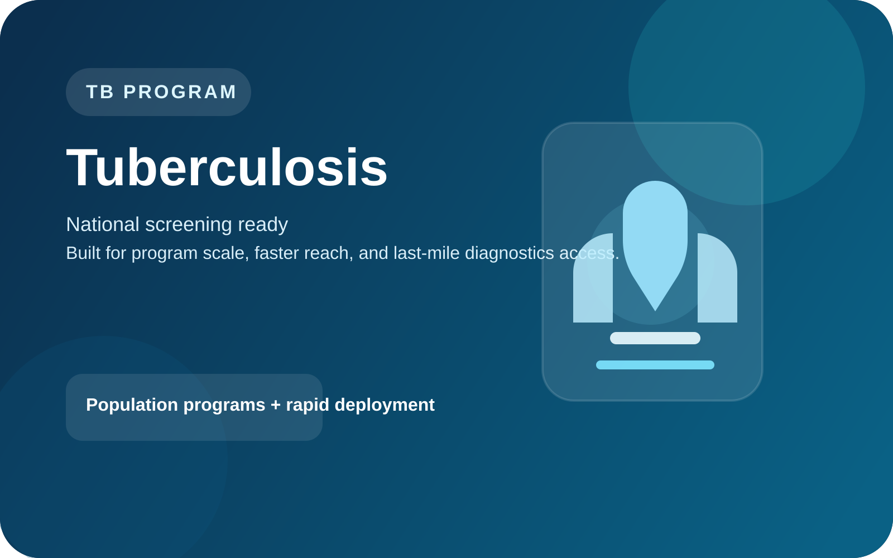

Use case
Built for national tuberculosis screening momentum.
Designed for program-led deployment where molecular accuracy, scale, and faster public-health rollout all matter at once.
Explore the tuberculosis program
Program-ready
Molecular
Public-health fit